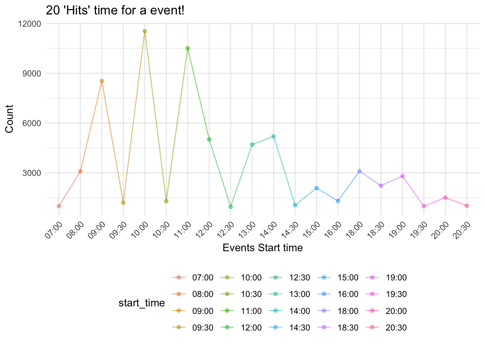

| year | count |
|---|---|
| 2013 | 11438 |
| 2014 | 12864 |
| 2015 | 12799 |
| 2016 | 12822 |
| 2017 | 11980 |
| 2018 | 13871 |
| 2019 | 752 |
Obviously, 2013 held the most events. Top three years with most numbers of events are 2013, 2014, and 2015.
| borough | title | count |
|---|---|---|
| Manhattan | Morning Fitness at Fort Tryon Park | 4693 |
| Manhattan | Central Park Tour: Iconic Views of Central Park | 2889 |
| Manhattan | Tour of Gracie Mansion | 2176 |
| State Island | Open Garden Days: Alice’s Garden at the H.H. Biddle House | 1500 |
| Manhattan | Exhibit: Oh Sit! 14 Sculptors Consider the Chair | 1232 |
| Manhattan | Bryant Park Juggling | 1210 |
| State Island | Daughters of the American Revolution and the Preservation of the Conference House | 994 |
| Brooklyn | Ed Center Open Hours | 711 |
| Bronx | Garden Highlights Walk | 669 |
| State Island | Threads: Flax to Linen, Field to Fabric | 640 |
| Bronx | Dinosaur Safari: Mysteries Revealed | 618 |
| Bronx | Shape Up Zumba with Pascal | 612 |
The most popular park event in Manhattan was “Morning Fitness at Fort Tryon Park,” which is consistent with the No.1 popularity of fitness events. The same can be said of the other boroughs. The top events of the Bronx and Staten Island were about nature, pop culture, and mysteries from the past. Brooklyn apparently attached greater importance to education and teenager lives, making it a fantastic destination for kids and their parents. Lastly, the Queens did live up to its name, with “Leading the Way: Six Outstanding Women of Queens” as the most popular park event.
| event_organizer | year | count |
|---|---|---|
| NYC Parks | 2015 | 3892 |
| City Parks Foundation | 2014 | 3849 |
| Central Park Conservancy | 2018 | 3775 |
| Bryant Park Corp. | 2014 | 3706 |
| Conference House Park | 2018 | 3630 |

Here’s the plot shows top 20 start time within a day which held the most parks events. Obviously, from 7:00 am to 8:30 pm within a day, the top three start time which held the most parks events were 10:00 am - 11:00 am, 11:00 am - 12:00 am, and 9:00 am to 10:00 am.